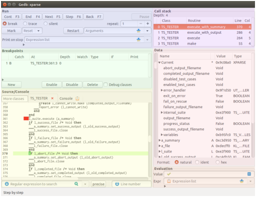

Figure 1: Overview of the main window (here, overlaid by artificial background colors to separate the parts). The Eiffel system shown in the screenshots has root class XPARSE from cluster test/example/parse/TESTGEN of the GOBO distribution.
The window contains a menubar on top, a statusbar on bottom and between them the parts named Run, Breakpoints, Source/Console on left half, Call stack, Data, and Evaluation on the right half. There are two more parts: the Source/Console part is actually two parts, Source shown in Fig. 1 and Console not shown, and the SQL table part to be shown separately. More windows can be opened from menu or by specific actions: a poor Source part called Feature window and several additional data windows.
The manual will describe the parts in the in the order from left to right and within each half from top to bottom.